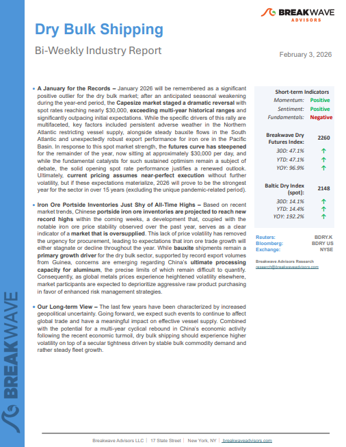
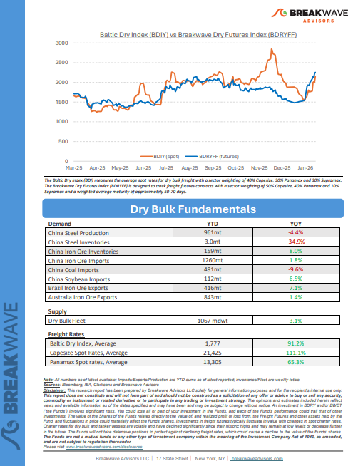

Welcome toBreakwave AdvisorsWeekend Read
As the week comes to a close, take a moment to review the key insights from the past few days. Missed something? We've gathered all the top insights for you to catch up at your convenience.
Breakwave Shipping Report
A January for the Records– January 2026 will be remembered as a significant positive outlier for the dry bulk market;


Insights Of The Week
China closed 2025 with headline economic growth
China closed 2025 with headline economic growth broadly in line with official objectives, offering a sense of macroeconomic continuity as the country prepares to transition into the 15th Five-Year Plan period.
Doric Weekly Market Insights
Geopolitics Before Fundamentals
Geopolitical developments dominated tanker markets last year, with a wave of sanctions primarily targeting Russia, secondary measures aimed at entities trading Russian and Iranian crude, the brief Israel-Iran conflict, Trump’s inauguration, US trade wars, and the US-China port-fee standoff among the key events. So far, this year is proving just as “eventful” as 2025.
Gibson Tanker Market Report
Seaborne coal suffers in 2025 as China burns less and produces more
Global seaborne coal flows suffered in 2025 due to significantly lower imports from China. This is a trend we expect to continue.
Signal Ocean Commodity Radar
Last year the newbuilding industry, and especially orders for dry bulkers, experienced a bleak period due to the impact of the regulations targeting Chinese shipbuilding and Chinese owned and operated ships which were formulated by the Office of the United States Trade Representative (USTR).
BRS Weekly Dry Bulk Newsletter
China's Thermal Coal Consumption Has Recently Exceeded New Supply
As we discussed in Commodore Research's most recent Weekly Executive Report, an in-depth examination of China’s most recent thermal coal consumption data by industry (December’s data) shows that the consumption of thermal coal for power generation and heating, consumption for the production of pig iron, consumption for the production of cement, and consumption for other industrial needs all most recently contracted on a year-on-year basis
From Commodore's Weekly Dry Bulk Reports
New storage tanks to lift China’s crude stockpiling demand
As China continues to expand refining and storage capacity, questions remain over how much incremental crude demand this will generate in the coming year.
Vortexa Freight Weekly
Energy Realignment: India Drops Russian Crude, Secures US Tariff Relief
On Monday, 2nd February 2026, U.S. President Donald Trump announced a new trade deal with India. The deal laid out how India will stop purchasing Russian crude oil and import more from the U.S., and possibly Venezuela.
Signal Ocean Market Insights
China's Consumer Sector Remains Weak
As we discussed in Commodore Research's most recent Weekly China Report, China’s retail sales in December grew year-on-year by only 0.9%, which has marked another decline.
From Commodore's Weekly Dry Bulk Reports
Big Picture: India-US trade deal
On Monday Trump cut India’s tariffs on exports to the US from 50% to 18%. Trump stated that Modi, for his part, had agreed to stop his country’s refiners buying Russian oil.
Braemar Research
Dry bulk markets stay firm ahead of Lunar New Year pressure points

While theWAUS–Chinatrade remains the largest by volume, the Africa–North China Capesize route has seen a larger increase in tonne-mile demand over the last year than the Brazil–China route.
Signal Ocean Dry Weekly Market Monitor
Fresh wave of selling hits metals
Precious metals were hit with a fresh wave of selling, which weighed on sentiment across the metals complex. Oil fell amid easing geopolitical tensions.
Commodities Wrap